My name is Ian Gonzales Sohan.
I am a Computer Science major at the University of Virginia.
My goal in life is to have a family and travel the world.
I plan to accomplish this goal by having an enjoyable career that makes a positive impact.
Education
I am currently pursuing a Bachelor's of Science in Computer Science at the University of Virginia.
Along with my major, I am also working towards a minor in Engineering Business.
To complement my coursework, I am working on personal projects and assignments to improve my skills as a programmer.
My current goal is to use my resources to obtain an internship in the field of software development for the summer of 2021.
I hope that the combination of my schooling and internships leads me to a successful and enjoyable career.
I graduated from Woodstock Academy in the spring of 2018.
I participated in my high school's varsity soccer team and was an active member in my school's wood shop.
I was also a member of my school's National Honor Society and Math Honor Society.
I left high school planning on studying economics, but after happening to take a Computer Science course my first semester of college,
I set my sights on the Engineering School, which I was accepted into after my first year.
Hobbies
Traveling
My dream is to see as much of the world as possible before I die.
My main goal is to visit every national park in the United States, but I hope to expand my horizons even farther than that.
I believe that traveling is the best form of education, and I will make it a priority in my life.
Weightlifting
It may not look like it, but I love to lift weights.
In college, I developed a few health problems that cause rapid weight loss.
In order to combat this, I began lifting as much as possible.
I now lift every weekday and am really encouraged to continue habits that allow for a healthy lifestyle.
Movies
My favorite passtime is watching movies.
I love watching classics and try to watch as many as I can in my freetime.
My preferred genre is action, but anything with a great story is something I'm interested in.
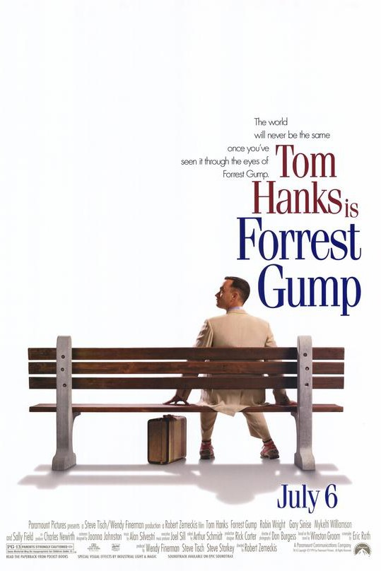
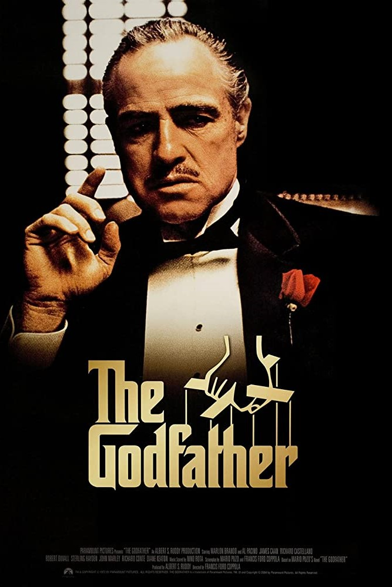
Books
I struggle to make time to read, but I have always loved it.
My favorite genres include satirical and science fiction.
I love books that clearly depict a complex message about life and society.
One of my personal goals is to become well-read and continue lifelong learning.
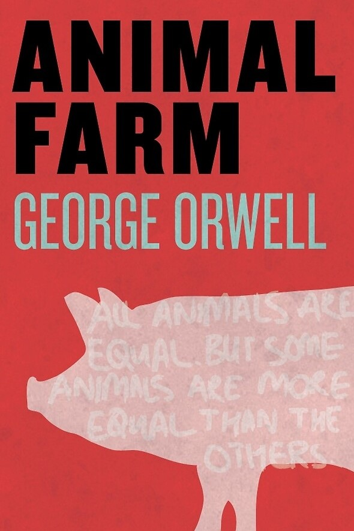
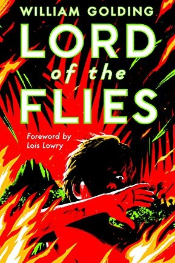
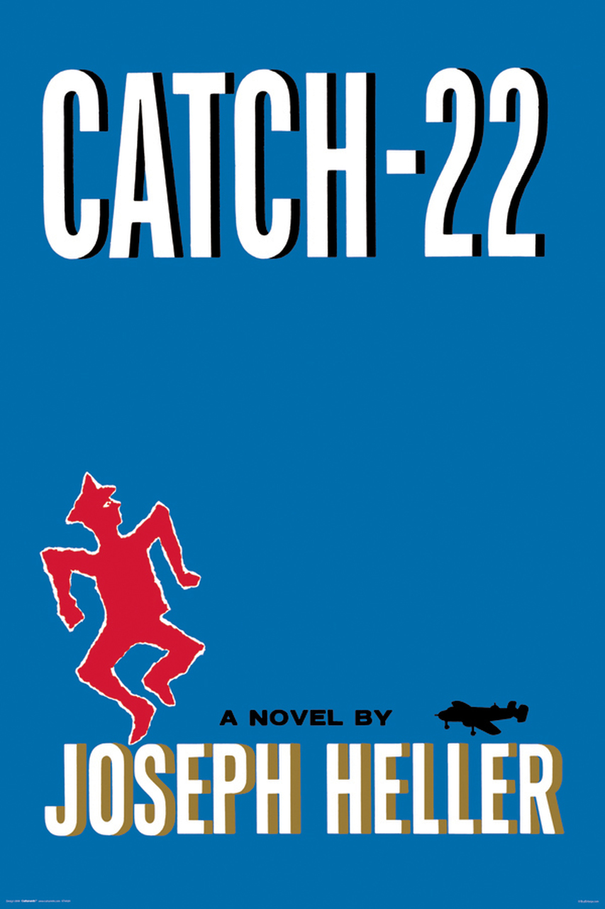
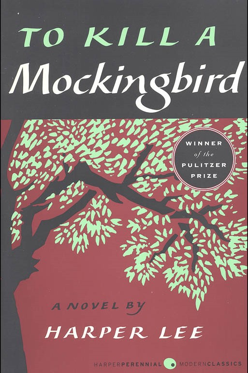
Comedy
I love to watch stand-up comedy specials.
It takes so much confidence and intelligence to get on stage and make an entire crowd laugh.
The best comedy, in my opinion, reflects on the absurdity of life.
My favorite comedians are the ones that can make a crowd laugh at themselves.
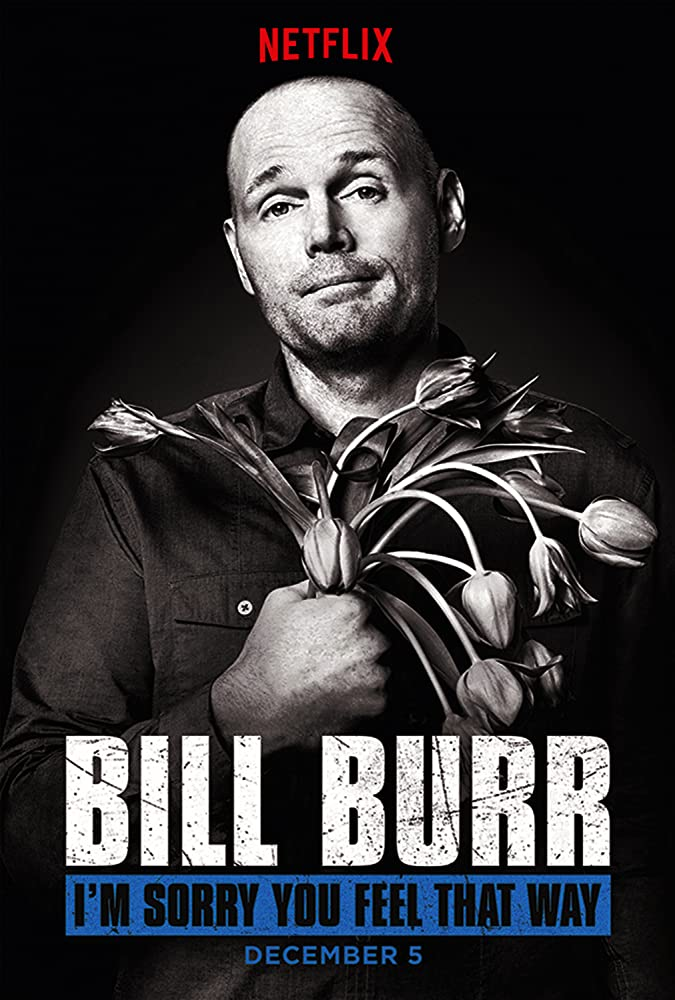
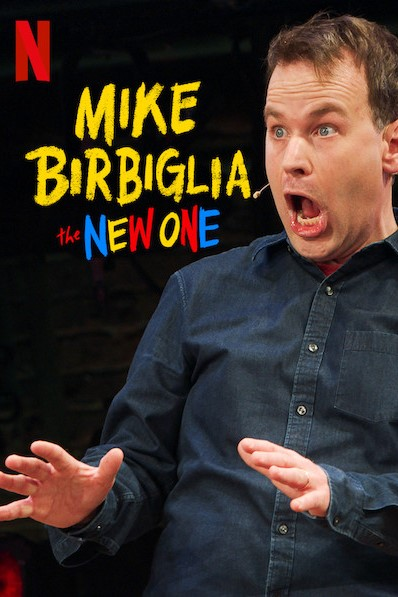
Woodworking
In high school, I decided to take a woodworking class.
I ended up loving it, and decided to take the other advanced classes as well.
For my final advanced project, I designed and built a night stand that led to winning my school's Golden Hammer award.
I haven't been able to do any woodworking since high school, but once I have my own house, I plan to make my own wood-shop.

 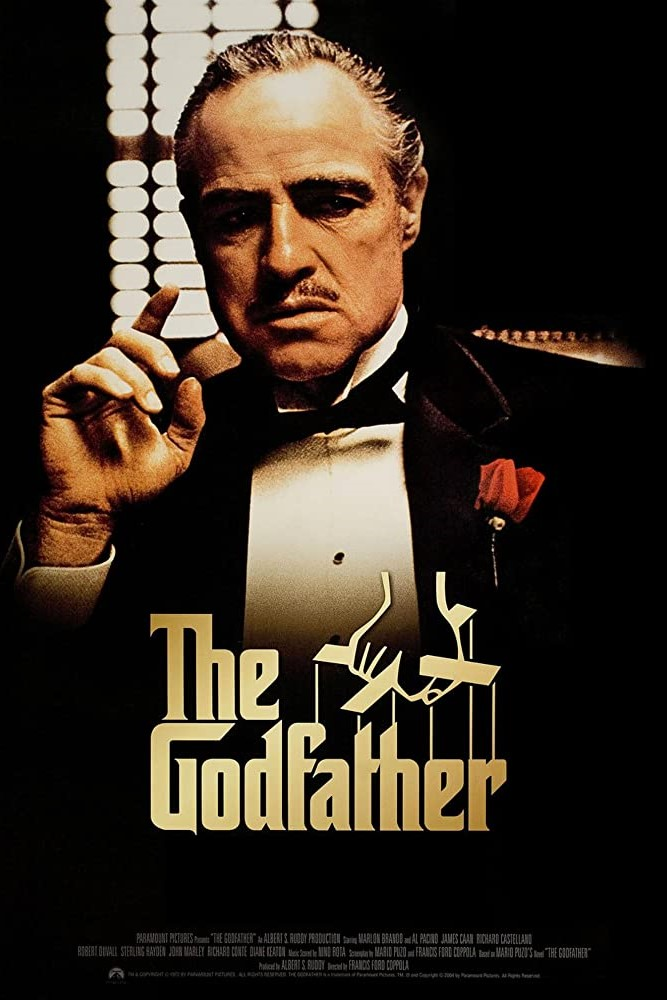
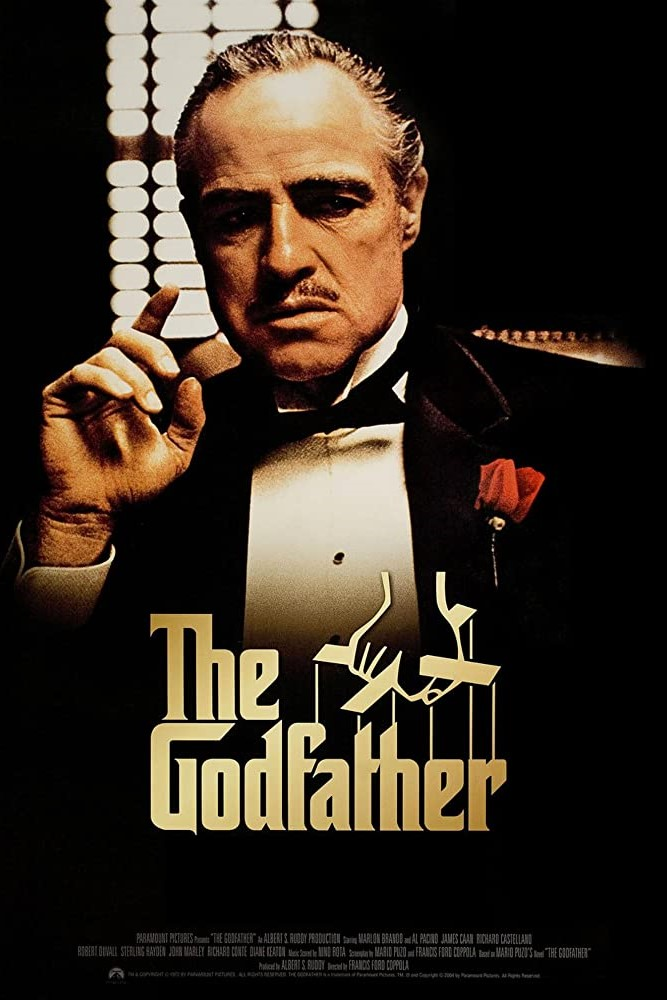


 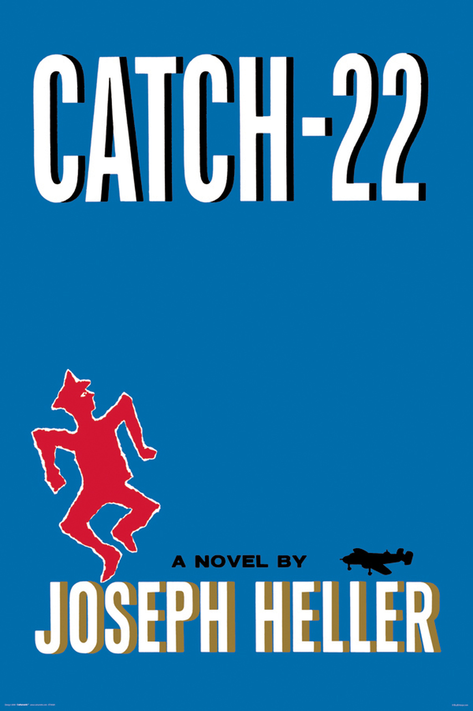
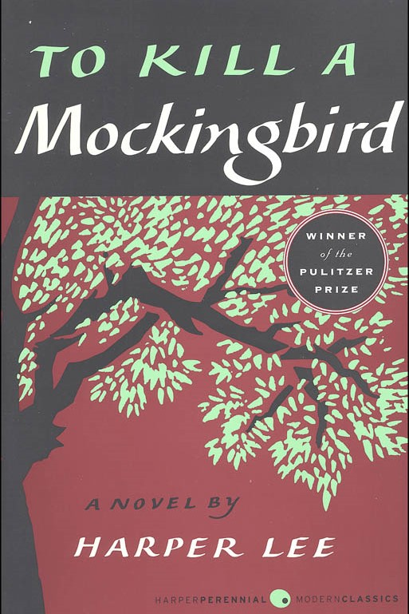
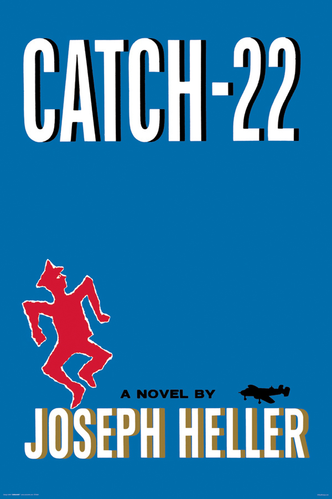
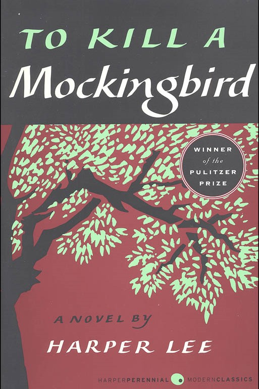
 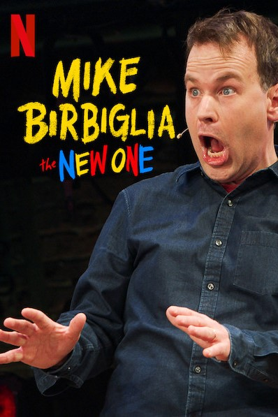
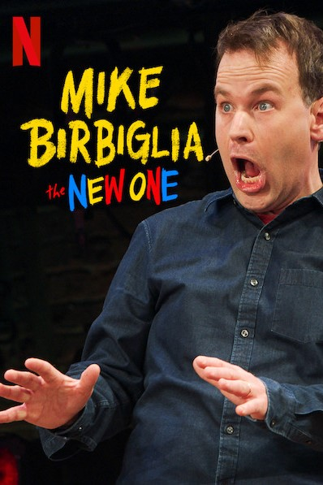